Setting a Basis
Bases are a powerful new experimental concept in
Cinderella.2 for structuring and creating logical dependencies in a drawing. One can set a basis with respect to a frame of up to four points. If a basis is set, then all drawing of free elements is performed with respect to this basis. If the base points move, then everything that is drawn within the basis moves accordingly.
There are four different kinds of bases that can be chosen:
- A translation basis requires one base point. If the point is translated, everything that is drawn in the basis is translated as well.
- A similarity basis requires two base points. These two points define the origin and the (1, 0) point of a coordinate system. Everything drawn with respect to this basis is scaled and rotated if the points are moved.
- An affine basis requires three base points. These three points define the origin, the (1, 0) point, and the (0, 1) point of an affine coordinate system. Everything drawn with respect to this basis is scaled and rotated and sheared if the points are moved.
- A projective basis requires four base points. These four points are considered as a basis of a coordinate system in which these points form a square. Everything is drawn accordingly.
After selecting "set basis" mode by pressing the corresponding button in the toolbar, one can select one up to four points. Leaving the mode by selecting a new mode defines a basis and declares it active. If a basis is active, all drawing operations and in particular the location of free objects are performed with respect to this basis. This means that if the points of the basis are moved, then the elements that are drawn with respect to this basis are changed accordingly (even if they were free elements).
Example: Creating a Similarity Basis
We will demonstrate the use of a basis with a similarity basis. For this we start by drawing two points to which the basis should be tied. Then we choose "set basis" mode and select these two points one after the other. While we do this, optical hints are shown that indicate which type of basis is currently chosen. At this stage, up to four points can be chosen. Leaving basis mode by selecting another mode triggers the completion of the basis selection, and the basis is then generated and activated.
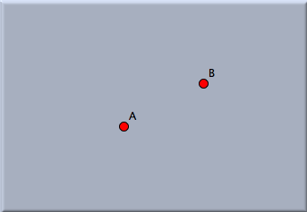
| |
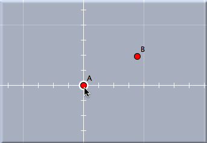 | |
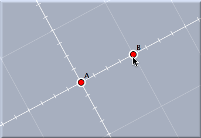 |
Two points for defining
a similarity basis
| |
Selecting the first point
| |
Selecting the second point
|
After basis mode is exited, a view button is generated that represents the basis. Whenever this button has a yellow border, the basis is active. Everything that is now drawn will have coordinates with respect to this basis. So now you can make an arbitrary geometric construction that may involve free points, circles with radius, and other free elements. In
Move Mode you can always change the positions of the free elements of your drawing. Now if you move one of the defining points of the basis, your entire drawing will change and will be adjusted to the current position of your basis.
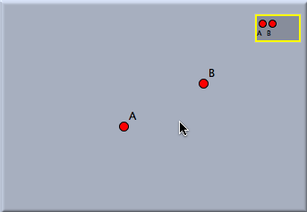 | |
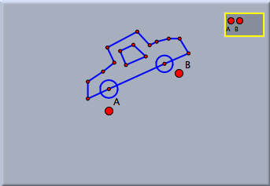 | |
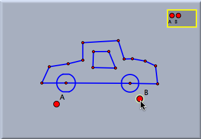 |
The basis is generated.
and selected
| |
Draw something.
| |
Move the basis.
|
In
Move Mode one can activate and deactivate bases by clicking them. Active bases are marked by a yellow frame. Clicking an active basis will deactivate it (and all other bases). Clicking an inactive basis will activate it. In this way it possible to have several bases within one construction that are related to different parts of the drawing. It is even possible to define a basis while another basis is active. Then the bases are cascading.
Example: Using a Projective Basis
By selecting four points in set basis mode it is also possible to create a projective basis. If a projective basis is selected, all drawings are performed as though the four points (in the selected order) formed the four vertices of a quadrangle.
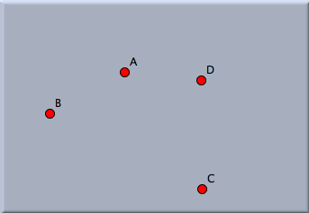 | |
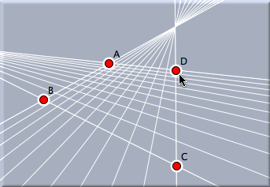 |
Four points for a projective basis
| |
Clicking them defines the basis.
|
This not only affects when the points that define the basis are moved, it affects the generation of several geometric construction operations. In particular, all operations that require (explicitly or implicitly) Euclidean measurements are perspectively distorted. The picture below shows a few constructions within a projective basis. Observe that in particular, midpoints and circles are perspectively adjusted.
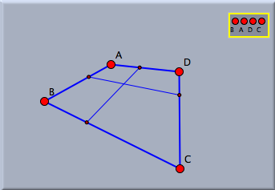 | |
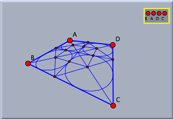 |
A simple drawing
| |
A more complex drawing
|
The following picture demonstrates the use of a projective basis in a more complicated setting. First a projective basis is constructed. Then in the usual way an iterated function system is defined. The iterated function system (IFS) will automatically appear in a skew perspective that corresponds to the projective basis.
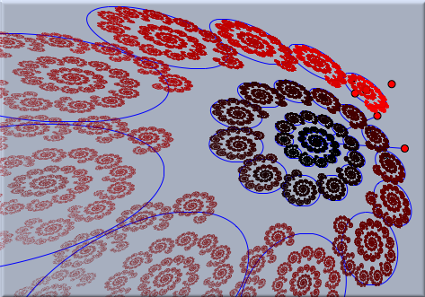 |
| An IFS in a projective basis |